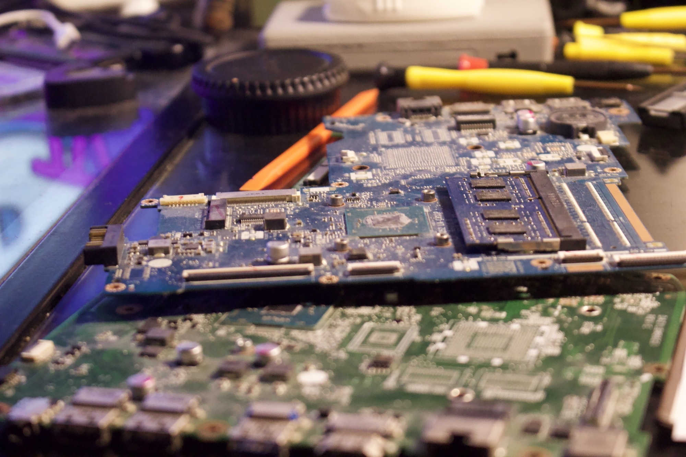
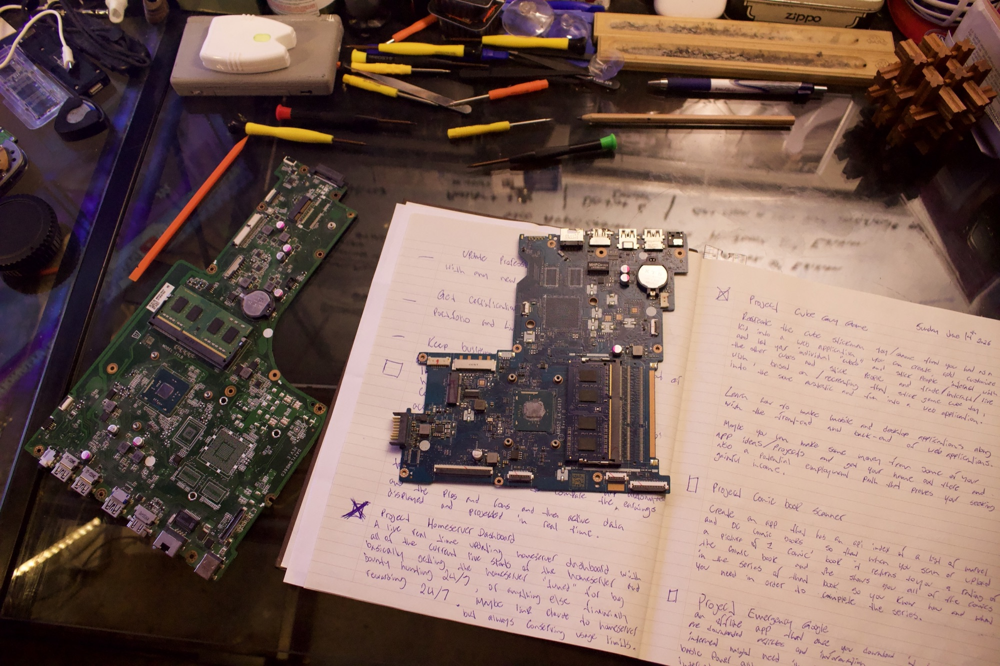
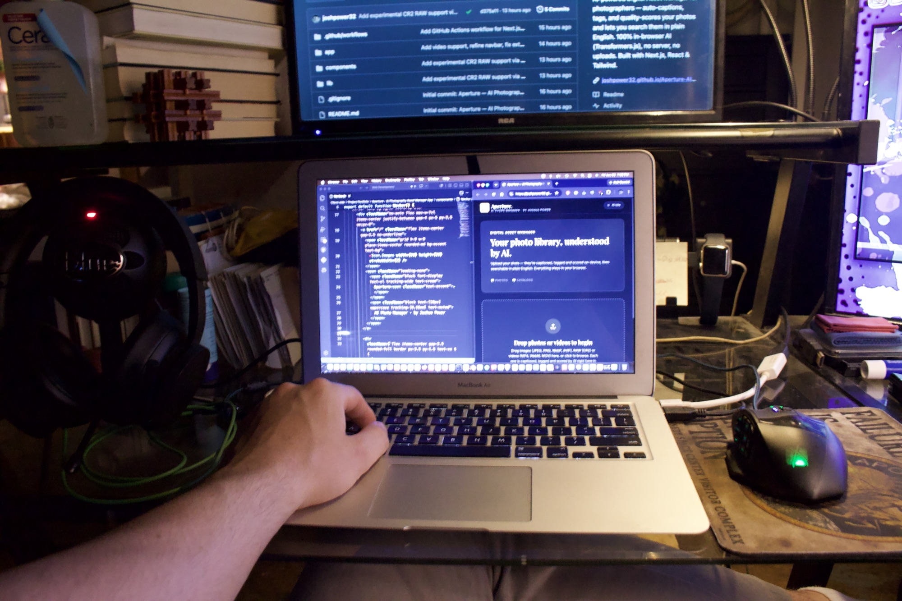

Cybersecurity Research | Web Development | Hardware Repair | Photography
I am a cybersecurity researcher, web developer, and hands-on hardware repair technician based in Hamilton, Ontario. I have training in responsive web development and design from Juno College of Technology, and I am currently completing Google's Cybersecurity Professional Certificate on Coursera (https://www.coursera.org/professional-certificates/google-cybersecurity). I perform freelance work across three practical skill areas : web application security research, front-end and full-stack app development with React, Node.js, and firebase, broken electronics repair, and photography projects.
Specializing in BOLA/IDOR vulnerability research across platforms including HackerOne, Bugcrowd, Intigriti, and YesWeHack. I research authorization flaws in public and invite-only programs using a structured, documented manual testing process.
Hands-on diagnostic and repair work across computers, mobile devices, and game consoles — documented with photos from real repairs. Click any photo to view it full size.
A look at where the work happens — from board-level diagnostics to building software. Click any photo to view it full size.


